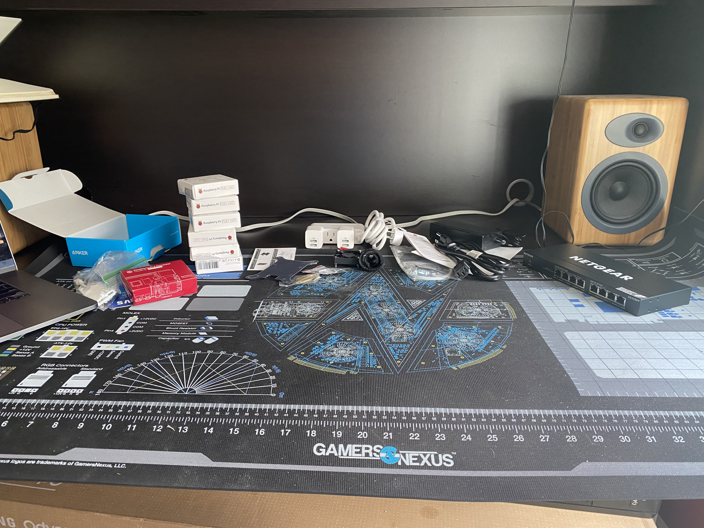
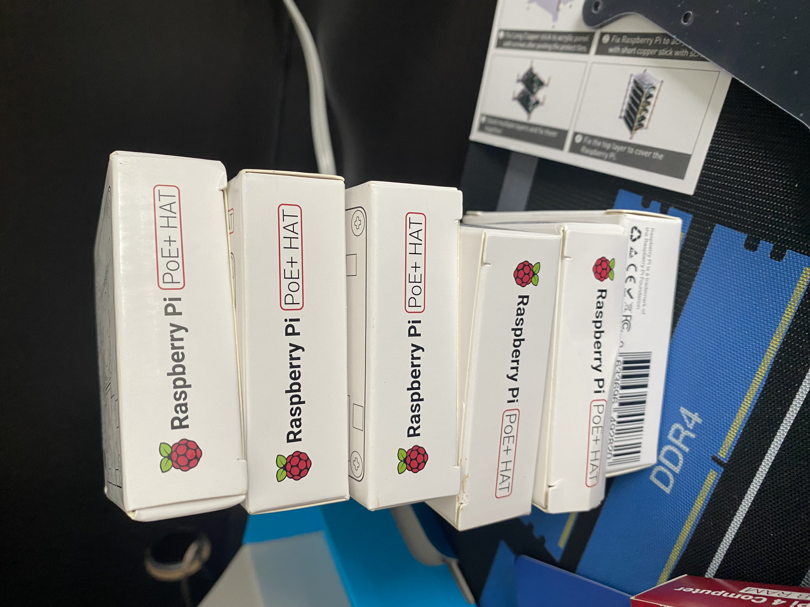
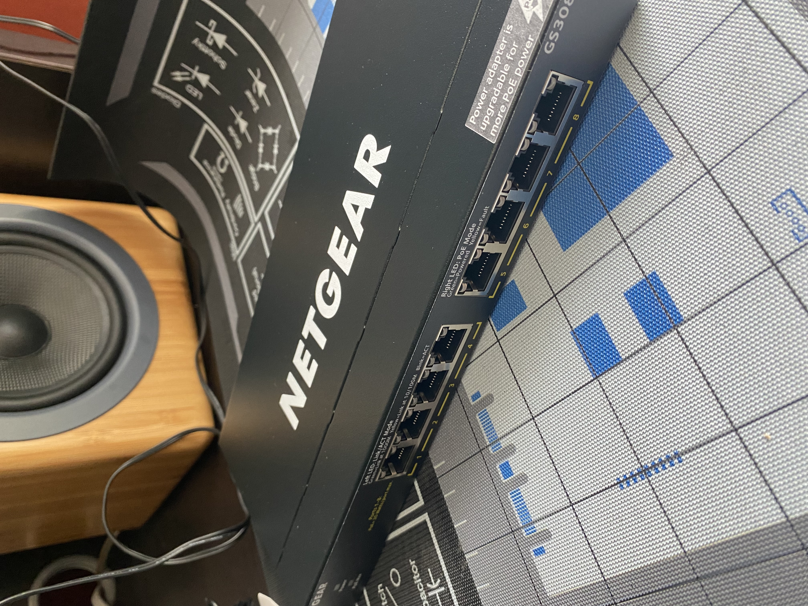
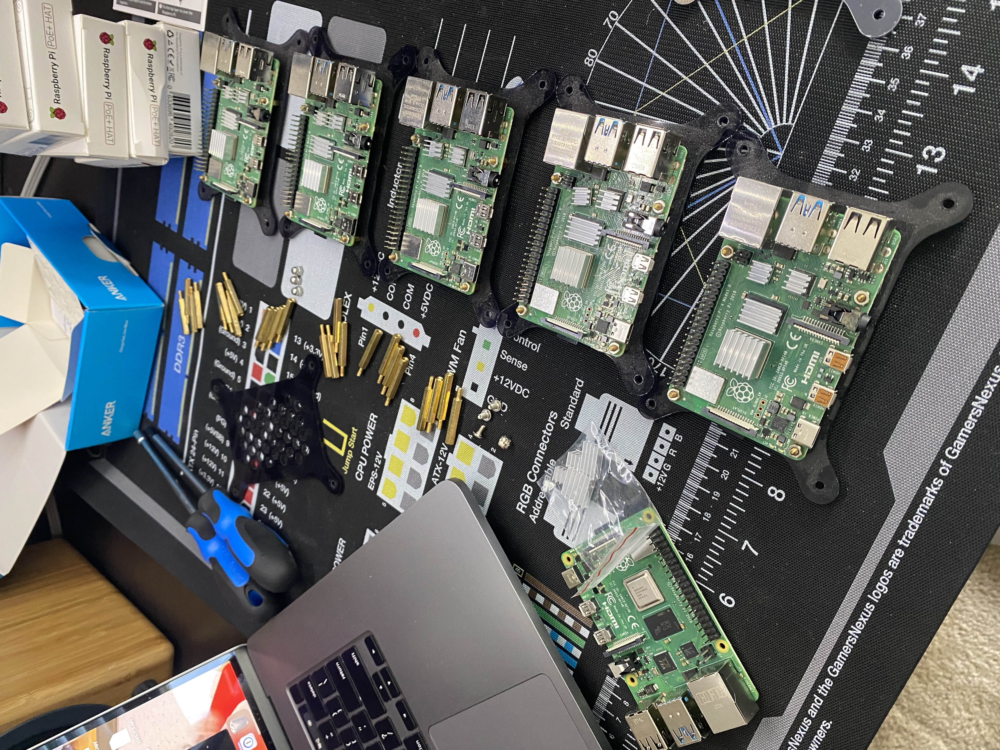
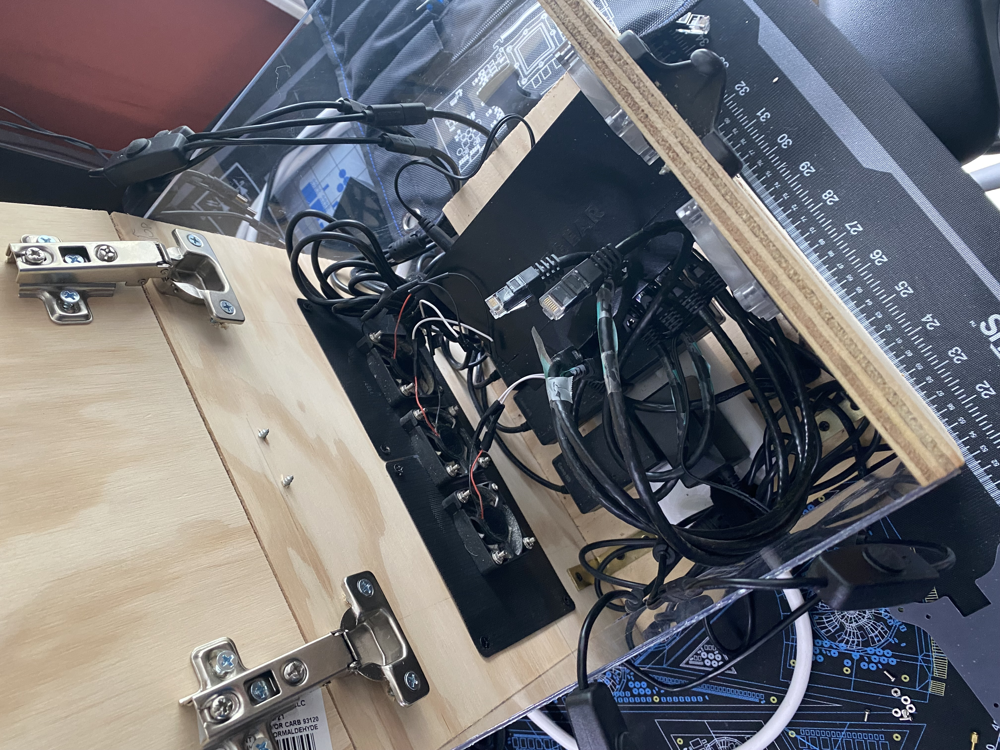
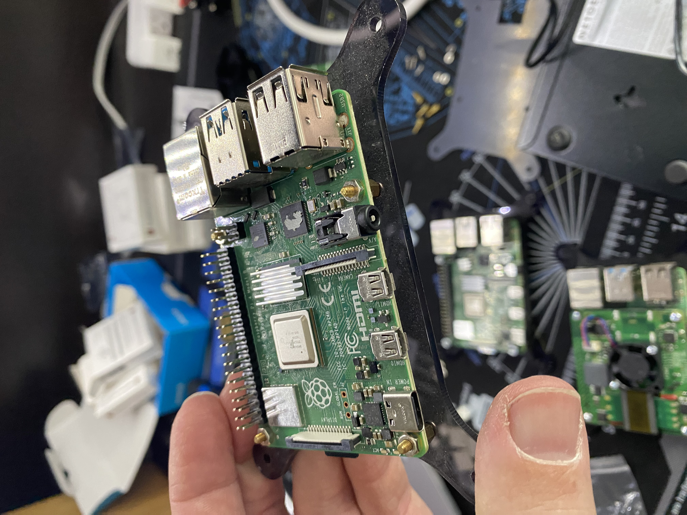
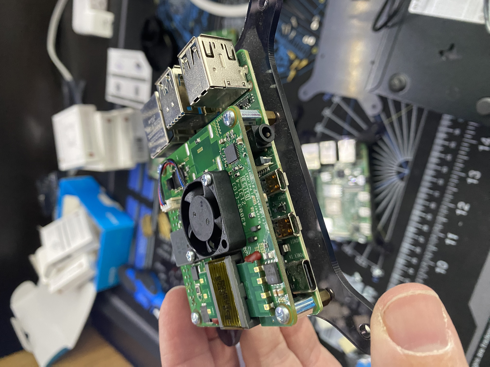
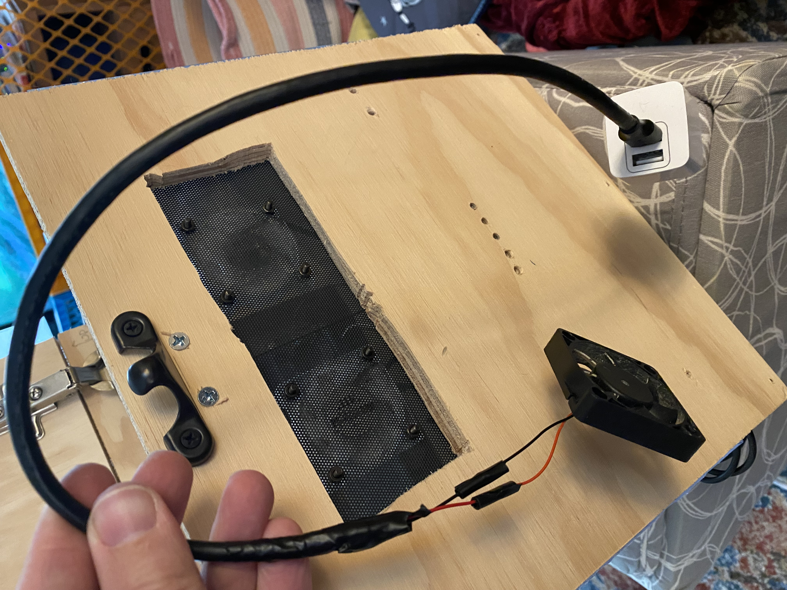
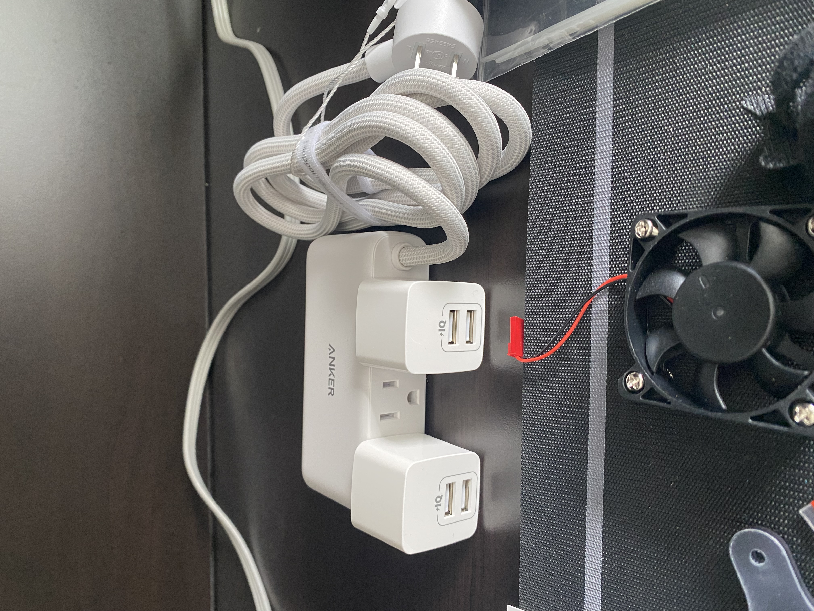
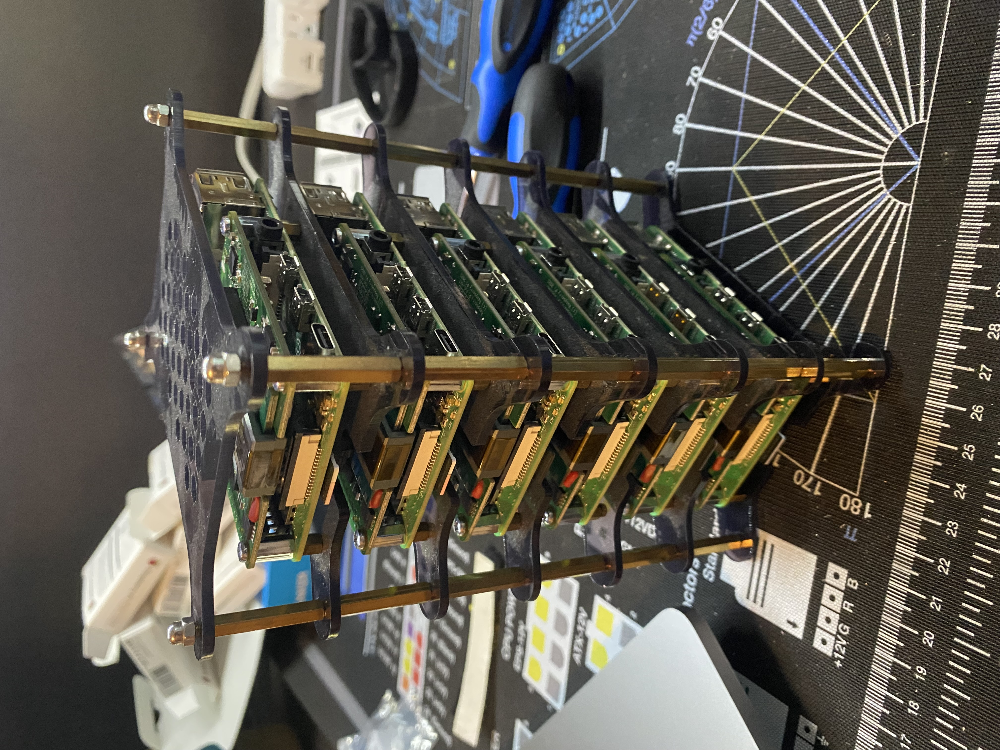

As I write this up, I’m sitting in my SciPy hotel room. It’s a nice way to relax and unwind after a long day of travel and tutorials, but I also apologize for any timezone weirdness or general grammar or syntax errors.
In the seven months since standing up my own Mastodon instance, the Mastodon team has made quite a few releases. Up until last week, I was running 4.0.2, which had originally been released back in November 2022 when I started this crazy journey.
I’d also been wanting to perform a hardware upgrade of the Pi cluster. The server rack I built back in mid-2022, while effective at protecting the cluster from toddlers, was a mess of cables on the inside: turns out, five stacked Raspberry Pi boards have a lot of associated cabling!
My plan for hardware updates included:
- installing power-over-ethernet (PoE) hardware-attached-on-top (HAT)s on each Raspberry Pi, so I could supply both power and networking through the ethernet cable
- rewiring the 3x Raspberry Pi case fans to be USB-powered, rather than depending on connections to the GPIO boards of each Pi
- downsizing the power brick inside the server case
This all took quite a bit of work. And, oddly enough, the software was the easy part.
Upgrading Mastodon
This was “merely” a matter of running an upgrade using the latest Helm chart from Mastodon’s repository. There was a minor wrinkle: the chart had been substantially updated from the one I used to install Mastodon back in December 2022. It has its own repository now!
I had to carefully go through the chart I used to originally install Mastodon, and the new chart, to make sure I was correctly transferring old configuration values to the new chart. I really only made two mistakes in this process:
- I forgot to fill in the mailer configuration
- When specifying the tag, I first put “4.1.3”, instead of “v4.1.3” 🤦♂️
Fortunately, both were easy fixes. What was a bit trickier was the re-emergence of a well-known race condition in the database migration process. It took three separate re-starts of the upgrade process, but it eventually ran to successful completion, and my instance is now running 4.1.3!
Of course, 4.1.4 was just released 3 days ago as of this writing. Of course.
Hardware Upgrades
If the software upgrades took a day, the hardware upgrades took a week.
I mentioned I wanted to install PoE HATs on each Raspberry Pi so they could draw both their power and network connectivity from a single ethernet connection.

What I didn’t mention is: there’s more to it than that. To power devices using PoE, you also need networking hardware that is PoE-compatible. This meant replacing my standard 6-port unmanaged switch with a PoE-compatible switch.
It also meant upgrading from 6 ports to 8, since I also wanted to add a 6th Pi to the cluster—which, when you include the necessary port for connecting the switch to the rest of the network, means a minimum of 7 ports.

To start, I had to shut down and disassemble the Raspberry Pi cluster (which you can see in this post back in January). Here was the result, along with the 6th Pi I wanted to add:

With the Pi cluster itself out of the homemade rack, you can see the interior with all the rest of the cabling:

Yeah. It was pretty crowded, even without the little stack of 5 Raspberry Pi boards. Clearing some of that out via PoE sounded really, really good.
The first step was to install the PoE HAT on each Raspberry Pi. Here’s a before shot:

And here’s what it looks like when I’ve installed a PoE HAT on it:

As an aside: this adds a surprising amount of weight to the Pi! By itself it wasn’t all that noticeable, but once I’d re-stacked the Pi cluster, I was more than a little shocked by how much heavier it was! Something to keep in mind.
The server rack I built has three Pi case fans as intake, and previously these were powered by literally hooking them into the 5V GPIO pins of three of the Pi boards. Now that all the Pi boards had HATs on, their GPIO pins were entirely inaccessible. Which was fine, because I’d wanted to convert the intake fans to USB power anyway—I’d done this already for the two exhaust fans, which I had cannibalized from an old desktop RAM cooler.
Fun fact: these old RAM cooler fans were the same size as the Pi case fans, but for some reason were 12V fans (and USB is, by default, 5V), so I needed to leverage Ohm’s Law and buy a converter that upped the resistence in order to increase the voltage.
Fortunately, this was not the case for the Pi case fans: they needed 5V, and 5V is what any standard USB plug provides. All that was needed was some minor rewiring so the fan leads connected to the corresponding wires inside a USB cable. The end result looked something like this:

I could now plug all five rack fans (three intake, two exhaust) directly into a new and smaller power brick, courtesy of some USB-to-outlet adapters to help further compress the size.

All that was left at this point was to reassemble the Pi cluster. As I said, I was surprised by the sturdiness of six Pi boards with PoE HATs:

It took several days’ worth of spare time to get everything together, but I’m proud to say that when I plugged the power brick into the wall, every single light and fan turned on all at once.
It was beautiful.
And mere minutes after, our Mastodon instance was back up and running, too! No commands or instructions needed on my part. Which is, frankly, impressive: as complex as kubernetes is, and as difficult as it can be to stand up applications in it, it’s remarkably robust once you’ve got it up and running.
Next Steps
I’ll probably just enjoy this for a bit 😀
But later, I’ll upgrade Mastodon again. On the hardware end, I don’t really have any additional ideas for the moment! Longer term, though, I have plans to move the Pi cluster into an actual homelab server rack (along with our home NAS, a full-sized home server, and all the networking equipment we have currently lying on the floor).
But that’s for another time 👋
Citation
@online{quinn2023,
author = {Quinn, Shannon},
title = {Upgrading the {Raspberry} {Pi} {Cluster}},
date = {2023-07-10},
url = {https://magsol.github.io/2023-07-10-upgrading-the-pi-cluster},
langid = {en}
}